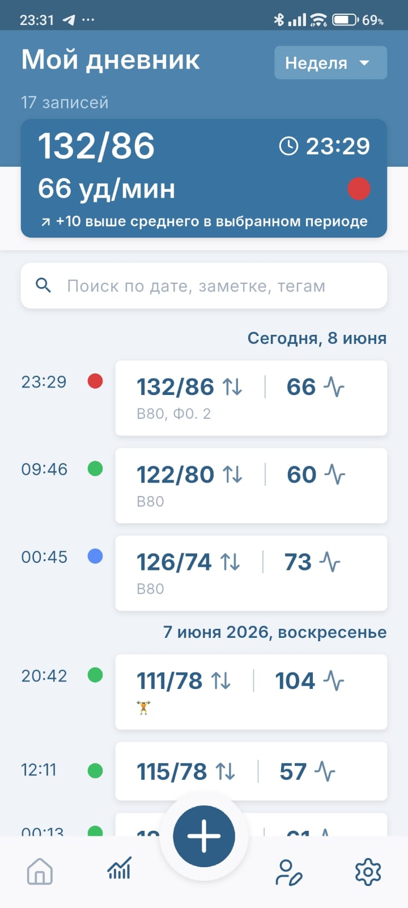
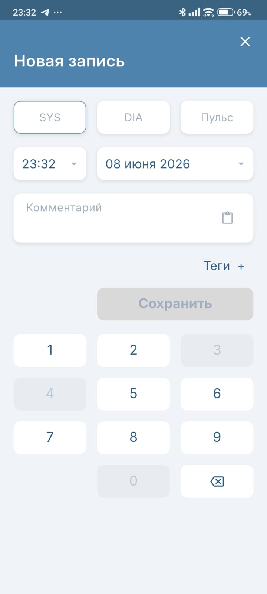
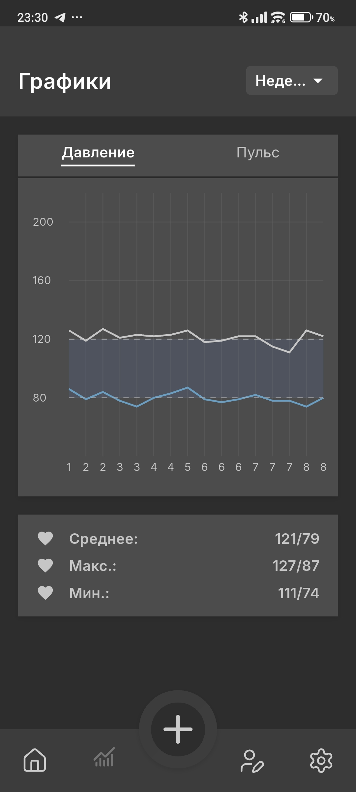

Pressure Diary
Дневник давления без лишнего шума
Удобное приложение для записи артериального давления и пульса: журнал, графики, заметки, теги, экспорт и резервные копии.
Без аккаунтов. Без рекламы. Без подписок.

Что умеет приложение
Журнал измерений по дням
Графики давления и пульса
Комментарии и шаблоны заметок
Теги для обстоятельств измерения
Экспорт CSV и PDF
Резервные копии JSON
Скриншоты






Скачать
APK-файл будет доступен здесь после публикации тестовой сборки.
Скачать APK скороПоддержать проект
Если приложение оказалось полезным — можно символически поддержать разработку. Но это совершенно не обязательно 🙂
Ссылка появится позже